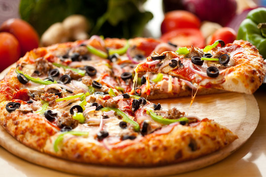

Home
Pizza

Description
Pizza is a popular Italian dish consisting of a flat
bread dough topped with tomato sauce, cheese, and
various toppings. It is baked until the crust becomes
golden and the cheese melts.
This homemade cheese pizza is simple to prepare and
can be customized with your favorite toppings.
Ingredients
- 2 cups all-purpose flour
- 3/4 cup warm water
- 1 teaspoon instant yeast
- 1 teaspoon sugar
- 1/2 teaspoon salt
- 1 tablespoon olive oil
- 1/2 cup pizza sauce
- 1 1/2 cups mozzarella cheese
- Fresh basil leaves (optional)
- Additional toppings of your choice
Steps
- Combine warm water, yeast, and sugar in a bowl.
- Add flour, salt, and olive oil.
- Mix and knead until a smooth dough forms.
- Cover the dough and let it rise for about one hour.
- Preheat your oven to 220°C.
- Roll the dough into your desired pizza shape.
- Spread pizza sauce evenly over the dough.
- Add mozzarella cheese and your preferred toppings.
- Bake for 12-15 minutes until the crust is golden.
- Allow the pizza to cool slightly before slicing.